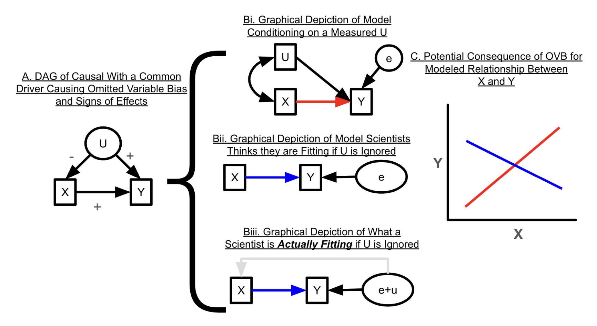

import numpy as np
import pandas as pd
import matplotlib.pyplot as plt
import seaborn as sns
import statsmodels.api as sm
import arviz as az
import networkx as nx
import graphviz
from graphviz import Digraph
import warnings
warnings.filterwarnings("ignore")20 Causalità dai dati osservazionali
Prerequisiti
- Leggere Statistical Rethinking. Focalizzati sul capitolo 1 The Golem of Prague.
- Leggere Causal inference with observational data and unobserved confounding variables di Byrnes e Dee (2024).
- Leggere Causal design patterns for data analysts (Riederer 2021). Questo post sul blog fornisce una panoramica di diversi approcci per fare affermazioni causali dai dati osservazionali.
- Leggere The Effect: An Introduction to Research Design and Causality. Focalizzati sul capitolo 10 Treatment Effects.
- Leggere Telling Stories with Data (Alexander 2023). Concentrati sul capitolo 15 Causality from observational data.
Concetti e competenze chiave
- Non è sempre possibile condurre un esperimento, ma possiamo utilizzare vari approcci per parlare comunque di causalità in una certa misura.
- Dobbiamo anche essere consapevoli dei quattro confondenti di base: la catena, la biforcazione, il collider e il discendente.
- Le inferenze derivanti dai dati osservazionali devono essere utilizzate con attenzione per le debolezze e le assunzioni, sia quelle che possiamo testare sia quelle che non possiamo.
Preparazione del Notebook
RANDOM_SEED = 42
rng = np.random.default_rng(RANDOM_SEED)
sns.set_theme(palette="colorblind")
az.style.use("arviz-darkgrid")
%config InlineBackend.figure_format = 'retina'Introduzione
Per assicurare la validità dei modelli statistici, è essenziale abbinarli a un’analisi causale. La pura osservazione dei dati può rivelare correlazioni e pattern nei dati, ma senza un’indagine sulle cause che stanno alla base di tali correlazioni, le conclusioni tratte possono essere fuorvianti o incomplete.
Richard McElreath, nel suo libro “Statistical Rethinking” (McElreath 2020), utilizza l’analogia dei Golem - creature potenti ma prive di saggezza - per descrivere un approccio metodologico che è stato a lungo predominante in psicologia. Questo approccio si basa esclusivamente sull’analisi delle associazioni statistiche tra variabili, trascurando considerazioni più profonde sulla causalità.
Il metodo in questione si concentra principalmente sul test delle ipotesi nulle, senza stabilire una chiara connessione tra le domande di ricerca riguardanti relazioni causali e i test statistici impiegati. Questa disconnessione è evidente nella figura successiva, tratta da un manuale di analisi dati di impostazione frequentista, che illustra la procedura raccomandata dai sostenitori di questo approccio per descrivere le associazioni tra variabili.

È importante notare come tale procedura non fornisca strumenti utili per identificare le effettive cause sottostanti ai fenomeni osservati. Questa limitazione metodologica è stata identificata come uno dei fattori principali che hanno contribuito alla crisi di replicabilità nella ricerca psicologica, come approfondito nel Capitolo 83. L’approccio descritto, pur essendo potente nell’individuare correlazioni, manca della “saggezza” necessaria per distinguere tra semplici associazioni e vere relazioni causali, analogamente ai Golem della metafora di McElreath.
Un problema evidenziato da McElreath (2020) è che processi causali completamente distinti possono generare la stessa distribuzione di risultati osservati. Pertanto, un approccio focalizzato esclusivamente sull’analisi delle associazioni mediante il test dell’ipotesi nulla non è in grado di distinguere tra questi diversi scenari, come spiegato nel Capitolo 62.
L’approccio frequentista, che si limita a descrivere le associazioni tra le variabili, ha una scarsa capacità di rilevare le caratteristiche cruciali dei fenomeni studiati e tende a produrre un alto tasso di falsi positivi (Zwet et al. 2023). È invece necessario utilizzare una metodologia che non si limiti a confutare ipotesi nulle, ma sia in grado di sviluppare modelli causali che rispondano direttamente alle domande di ricerca. In questo capitolo, ci concentreremo sull’introduzione dei concetti fondamentali dell’analisi causale.
20.1 Cos’è la causalità?
Quando parliamo di “causalità”, ci riferiamo a un concetto fondamentale nella ricerca scientifica. Ma cosa significa esattamente affermare che qualcosa è “causale”? E perché è così importante comprendere la causalità?
Molte delle domande di ricerca che ci interessano sono di natura causale. Ad esempio:
- Non ci basta sapere se le persone che praticano regolarmente attività fisica soffrono meno d’ansia; vogliamo capire se l’attività fisica effettivamente riduce i livelli d’ansia.
- Non ci accontentiamo di osservare che chi segue una terapia cognitivo-comportamentale (CBT) presenta meno sintomi depressivi; desideriamo verificare se la CBT realmente diminuisce questi sintomi.
- Non ci limitiamo a constatare che l’uso frequente dei social media è associato a un calo del benessere mentale; vogliamo determinare se l’uso intensivo dei social media causa effettivamente una diminuzione del benessere mentale.
Sebbene non esista una definizione univoca di causalità, possiamo concettualizzarla così: diciamo che A causa B se, intervenendo e modificando il valore di A, anche la distribuzione di B cambia di conseguenza.
Prendiamo un esempio concreto: supponiamo che la terapia cognitivo-comportamentale (CBT) riduca l’ansia. Se un gruppo di persone ansiose non riceve alcun trattamento, i loro livelli d’ansia rimarranno presumibilmente invariati. Se invece interveniamo introducendo la CBT (modificando così il valore di A), i livelli d’ansia nel gruppo diminuiranno (cambiando quindi il valore di B). Questa definizione ci permette di distinguere tra semplice correlazione e vera causalità.
Possiamo applicare questa definizione anche per collegare variabili apparentemente distanti. Ad esempio, l’autoefficacia potrebbe non avere un effetto causale diretto sulle prestazioni accademiche. Tuttavia, se aumentiamo l’autoefficacia attraverso interventi mirati, probabilmente osserveremo un miglioramento nell’impegno allo studio. Quindi, l’aumento dell’autoefficacia causa un incremento dell’impegno nello studio. E se aumentiamo l’impegno nello studio, questo migliorerà le prestazioni accademiche. Di conseguenza, indirettamente, l’autoefficacia influisce sulle prestazioni accademiche.
È importante precisare che affermiamo che A causa B anche quando modificare A non porta sempre direttamente a un cambiamento in B, ma altera solo la probabilità che B si verifichi. In altre parole, modifica la distribuzione di B.
Un’ulteriore precisazione riguarda le variabili non manipolabili, come i tratti di personalità. Anche queste variabili possono avere effetti causali. È possibile indagare cosa sarebbe accaduto se il tratto di personalità di un individuo fosse stato diverso, effettuando una sorta di manipolazione teorica.
In sintesi, la causalità implica che un cambiamento in A provoca un cambiamento in B, anche se non sempre in modo diretto e certo, ma alterando la probabilità che B si verifichi.
20.2 Variabili confondenti
I fenomeni psicologici sono intrinsecamente complessi. Questa complessità si manifesta nella presenza di numerose variabili confondenti, ovvero variabili che influenzano sia una causa che un effetto di interesse.
A differenza delle variabili che influenzano solo l’effetto, le variabili confondenti complicano notevolmente l’analisi causale. Queste variabili possono portare a stime errate degli effetti causali se non vengono misurate e controllate nelle analisi statistiche. La mancata considerazione delle variabili confondenti introduce un bias nei nostri stimatori statistici, portando a stime che non riflettono il vero valore dell’effetto.
Una soluzione apparentemente semplice sarebbe quella di controllare statisticamente tutte le variabili confondenti. Tuttavia, questo approccio presenta due sfide insormontabili:
- richiede la conoscenza di tutte le possibili variabili confondenti;
- necessita di misurare ciascuna di queste variabili, cosa che spesso risulta impraticabile.
Controllo sperimentale e controllo statistico
Il controllo è un elemento fondamentale per stabilire relazioni causali, in quanto consente l’isolamento degli effetti delle variabili indipendenti da potenziali confondenti che potrebbero influenzare le variabili dipendenti. Si distinguono due principali metodologie di controllo.
Il controllo sperimentale è implementato attraverso il disegno sperimentale e si basa principalmente sulla randomizzazione. L’assegnazione casuale dei soggetti ai gruppi sperimentali e di controllo ha lo scopo di distribuire equamente le variabili confondenti tra i gruppi, garantendo che le differenze osservate siano attribuibili alla manipolazione sperimentale.
Il controllo statistico è applicato durante l’analisi dei dati e mira a neutralizzare o quantificare l’influenza di variabili estranee. Questo si realizza mediante tecniche statistiche e modelli che consentono di isolare l’effetto delle variabili indipendenti sulle variabili dipendenti.
A causa di queste difficoltà, l’inferenza causale basata su dati osservazionali viene spesso considerata impossibile, dando origine al famoso detto “correlazione non implica causazione”.
Tuttavia, in alcune condizioni, è possibile trarre inferenze causali dai dati osservazionali. L’obiettivo di questo capitolo è introdurre i concetti di base dell’analisi causale che permettono di raggiungere tale obiettivo.
20.3 Inferenza Causale
L’inferenza causale mira a rappresentare il processo sottostante a un fenomeno, consentendo di prevedere gli effetti di un intervento. Oltre a anticipare le conseguenze di una causa, permette di esplorare scenari controfattuali, immaginando gli esiti alternativi che si sarebbero verificati con decisioni diverse. Questo tipo di ragionamento è fondamentale sia in contesti descrittivi che inferenziali.
Nonostante gli esperimenti offrano un elevato grado di certezza nella determinazione delle relazioni causali, i disegni osservazionali presentano vantaggi in termini di flessibilità e applicabilità in situazioni in cui gli esperimenti non possono essere condotti per ragioni etiche o pratiche. L’obiettivo della “Rivoluzione Causale” è quello di riuscire a trarre delle conclusioni di tipo causale da dati di natura osservazionale.
Secondo McElreath (2020), per condurre un’analisi causale è necessario seguire una serie di passaggi chiave:
- Comprendere il concetto teorico del fenomeno oggetto dell’analisi.
- Sviluppare modelli causali che descrivano accuratamente le relazioni tra le variabili coinvolte nel problema di ricerca, basandosi sulla teoria sottostante.
- Formulare modelli statistici appropriati che riflettano fedelmente il contesto scientifico e le relazioni causali identificate.
- Eseguire simulazioni basate sui modelli causali per verificare se i modelli statistici sviluppati siano in grado di stimare correttamente ciò che è teoricamente atteso. Questa fase di verifica è cruciale per garantire la validità dei modelli.
- Condurre l’analisi dei dati effettivi utilizzando i modelli statistici sviluppati, avendo la fiducia che riflettano accuratamente le teorie sottostanti e le relazioni causali.
In questo schema, un aspetto chiave è rappresentato dalla conoscenza del dominio. Senza una tale conoscenza, l’inferenza causale non è possibile, e questo rappresenta certamente la difficoltà maggiore da superare. In presenza di adeguate conoscenze del dominio, secondo McElreath (2020), due strumenti cruciali per l’inferenza causale sono i Grafi Aciclici Direzionati (DAG) (Rohrer 2018) e l’uso di modelli statistici avanzati.
20.4 Bias da Variabile Omessa
Possiamo introdurre le difficoltà dell’inferenza causale facendo riferiento al bias da variabile omessa (Omitted Variable Bias, o OVB; Wilms et al. (2021)). Come discusso da Byrnes e Dee (2024), l’omissione dall’analisi statistica di variabili confondenti note ma non misurate, o sconosciute e non misurate, può portare a stime errate della magnitudine degli effetti, errori nel segno delle stime (stimatori distorti), correlazioni spurie, e al mascheramento delle vere relazioni causali.
Un illustrazione di questa situazione è fornita nella Figura 20.1 (ispirata da Byrnes e Dee (2024)). La figura mostra tre DAG che illustrano diversi scenari in cui le variabili non osservate non influenzano i risultati del modello o potrebbero creare problemi a causa della confusione. Una variabile di risposta di interesse (Y) è causata sia da una variabile misurata (X) che da una variabile non misurata (U). Nel pannello di sinistra, la variabile non osservata (U) non è una variabile confondente. Nel pannello centrale, la variabile non osservata (U) è una variabile confondente e causa il bias da variabile omessa. Nel pannello di destra la variabile non osservata (U) causa il bias da variabile omessa in maniera indiretta.
Affrontare i problemi creati dalle variabili confondenti non misurate rappresenta una sfida primaria nell’inferenza causale dai dati osservazionali. A differenza dell’errore di misurazione nelle variabili predittive, che produce un bias costante verso lo zero e può essere corretto o modellato (McElreath 2020; Schennach 2016), con l’OVB non possiamo conoscere la grandezza o la direzione del bias senza conoscere tutte le possibili variabili confondenti e le loro relazioni nel sistema.
Nonostante queste sfide, non è necessario abbandonare l’uso dei dati osservazionali per l’inferenza causale in psicologia. È invece necessario ricorrere all’adozione di di tecniche ben consolidate provenienti da altri campi, quali l’economia, per potere comunque svolgere l’inferenza causale.
È evidente che questo approccio porterà a conclusioni inevitabilmente parziali, destinate ad essere perfezionate da studi successivi. Tuttavia, tale metodologia offre il vantaggio di esplicitare il “modello generativo dei dati”, ovvero la struttura causale sottostante ai fenomeni psicologici oggetto di studio.
I progressi nella ricerca empirica conducono a una maggiore comprensione e, di conseguenza, a modifiche nelle ipotesi sui meccanismi causali. Questo processo rappresenta un’evoluzione della conoscenza scientifica. Tale sviluppo è reso possibile proprio perché le ipotesi causali sono formulate in termini di modelli formali, che descrivono in modo preciso i meccanismi ipotizzati.
Al contrario, limitarsi alla mera descrizione delle associazioni tra variabili non consente questo tipo di avanzamento conoscitivo. La formulazione di modelli causali espliciti permette infatti di testare, raffinare e, se necessario, rivedere le ipotesi sui meccanismi sottostanti ai fenomeni osservati, portando a una comprensione più profonda e dinamica dei processi psicologici.
20.5 Grafi Aciclici Diretti
I Grafi Aciclici Diretti (DAG) rappresentano uno strumento essenziale per l’inferenza causale, offrendo una rappresentazione grafica delle relazioni causali ipotizzate tra le variabili. Sono chiamati “diretti” perché le variabili (nodi) sono collegate da frecce anziché semplici linee, e “aciclici” perché non è possibile ritornare a un nodo seguendo il percorso delle frecce.
In un DAG, una freccia da X a Y indica che X influenza Y su base probabilistica. I nodi collegati da una freccia sono definiti “genitore” (origine) e “figlio” (destinazione). Se si può raggiungere B da A seguendo una successione di frecce, A è detto “antenato” e B “discendente”.
I DAG consentono di identificare le variabili confondenti basandosi sulla teoria di Judea Pearl (Pearl 2009). È cruciale rappresentare tutte le possibili relazioni, poiché l’assenza di una freccia implica la certezza dell’assenza di relazione.
Due concetti fondamentali nella teoria dei DAG sono la d-separazione e il criterio del back-door.
La d-separazione
La d-separazione ci aiuta a comprendere come l’informazione o l’influenza si propaga tra le variabili in un modello causale. In sostanza, la d-separazione ci dice quando un insieme di variabili (che chiamiamo Λ) può “bloccare” il flusso di informazioni tra due altre variabili.
Immaginiamo un modello causale come una rete di variabili interconnesse. Alcune variabili influenzano direttamente altre, creando dei percorsi attraverso i quali l’informazione può fluire. La d-separazione ci aiuta a identificare quali percorsi sono “aperti” (permettono il passaggio di informazioni) e quali sono “chiusi” (bloccano il passaggio di informazioni).
Consideriamo le tre situazioni principali:
Catena (X → Z → Y): In questo caso, Z è un mediatore tra X e Y. Se Z appartiene all’insieme Λ (cioè, se controlliamo o condizioniamo su Z), blocchiamo il flusso di informazioni da X a Y attraverso questo percorso.
Esempio 20.1 Se X è “esercizio fisico”, Z è “pressione sanguigna” e Y è “rischio di malattie cardiache”, controllando per la pressione sanguigna (Z) blocchiamo il percorso attraverso il quale l’esercizio fisico influenza il rischio di malattie cardiache.
Fork (X ← Z → Y): Qui, Z è una causa comune sia di X che di Y. Se Z appartiene a Λ, blocchiamo la correlazione spuria tra X e Y che deriva dalla loro causa comune.
Esempio 20.2 Se Z è “status socioeconomico”, X è “livello di istruzione” e Y è “stato di salute”, controllando per lo status socioeconomico (Z) eliminiamo la correlazione apparente tra istruzione e salute che potrebbe derivare dal fatto che entrambe sono influenzate dallo status socioeconomico.
Collider (X → Z ← Y): In questa situazione, Z è un effetto comune di X e Y. Sorprendentemente, se né Z né i suoi discendenti appartengono a Λ, il percorso è già bloccato. Controllare per Z (o i suoi discendenti) in realtà aprirebbe un percorso tra X e Y, creando una correlazione spuria.
Esempio 20.3 Se X è “intelligenza”, Y è “bellezza” e Z è “successo in una carriera di attore”, controllare per il successo nella carriera di attore (Z) creerebbe una correlazione apparente tra intelligenza e bellezza, anche se queste potrebbero essere indipendenti nella popolazione generale.
In sintesi, la d-separazione ci aiuta a identificare quali variabili dobbiamo controllare (e quali non dobbiamo controllare) per ottenere stime causali non distorte. Ci permette di “bloccare” i percorsi non causali e di mantenere aperti solo i percorsi causali di interesse, facilitando così l’inferenza causale corretta.
Il criterio del back-door
Il criterio del back-door è uno strumento potente nella teoria dei Grafi Aciclici Diretti (DAG) per identificare quali variabili devono essere controllate per ottenere stime causali non distorte. L’obiettivo è “chiudere” tutti i percorsi non causali (back-door paths) tra la variabile di esposizione e l’outcome, lasciando aperto solo il percorso causale diretto.
Per applicare il criterio del back-door è necessario seguire i seguenti passaggi:
Eliminare le frecce dirette dall’esposizione all’outcome: Questo passaggio ci permette di concentrarci sui percorsi non causali (back-door paths) che potrebbero creare confondimento. Rimuovendo la freccia diretta, possiamo vedere chiaramente tutti gli altri percorsi che collegano l’esposizione all’outcome.
Esempio 20.4 In un DAG dove “Esercizio fisico” → “Salute cardiovascolare”, e abbiamo anche “Dieta” → “Esercizio fisico” e “Dieta” → “Salute cardiovascolare”, rimuoveremmo temporaneamente la freccia da “Esercizio fisico” a “Salute cardiovascolare”.
Verificare i percorsi non bloccati tra esposizione e outcome: Dopo aver rimosso la freccia diretta, esaminiamo tutti i percorsi rimanenti che collegano l’esposizione all’outcome. Questi sono i potenziali percorsi di confondimento.
Esempio 20.5 Nel nostro esempio, rimarrebbe il percorso: “Esercizio fisico” ← “Dieta” → “Salute cardiovascolare”.
Identificare le variabili necessarie per bloccare questi percorsi: Utilizzando i principi della d-separazione, determiniamo quali variabili, se controllate, bloccherebbero tutti i percorsi non causali.
Esempio 20.6 Nel nostro esempio, controllando per “Dieta” bloccheremmo l’unico percorso non causale rimanente.
L’applicazione di questi passaggi ci permette di identificare un set di variabili che, se controllate (ad esempio, includendole in un modello di regressione o stratificando su di esse), ci consentirà di stimare l’effetto causale dell’esposizione sull’outcome senza distorsioni da confondimento.
Punti chiave:
- Il criterio del back-door aiuta a identificare il set minimale di variabili da controllare.
- Non tutte le variabili associate sia all’esposizione che all’outcome devono essere controllate; solo quelle che creano percorsi back-door.
- In alcuni casi, potrebbe non essere necessario controllare alcuna variabile (se non ci sono percorsi back-door aperti).
- In altri casi, potrebbe essere impossibile bloccare tutti i percorsi back-door con le variabili disponibili, indicando che l’effetto causale non può essere identificato con i dati a disposizione.
Utilizzando il criterio del back-door in combinazione con i DAG, i ricercatori possono fare scelte più informate su quali variabili includere nelle loro analisi, migliorando così la validità delle loro inferenze causali.
20.6 Variabili da includere nell’analisi
La procedura per identificare il set minimo di variabili necessarie per ottenere una stima causale non distorta è un’estensione del criterio del back-door.
Rimuovere le frecce che partono dalla variabile di esposizione: Questo passo è simile al primo passo del criterio del back-door, ma più ampio. Qui, rimuoviamo tutte le frecce che partono dalla variabile di esposizione, non solo quella diretta all’outcome. Questo ci permette di concentrarci sui percorsi che potrebbero creare confondimento, eliminando temporaneamente gli effetti dell’esposizione su altre variabili.
Esempio 20.7 Se abbiamo un DAG dove “Esercizio fisico” (esposizione) → “Salute cardiovascolare” (outcome), “Esercizio fisico” → “Peso corporeo”, e “Peso corporeo” → “Salute cardiovascolare”, rimuoveremmo entrambe le frecce che partono da “Esercizio fisico”.
Aggiungere gli archi di controllo generati dall’insieme considerato: Questo passo simula l’effetto di controllare per le variabili nell’insieme che stiamo considerando. Per ogni variabile nell’insieme, aggiungiamo archi non diretti (linee senza frecce) tra quella variabile e tutte le altre variabili ad essa adiacenti nel grafo originale.
Esempio 20.8 Nel nostro esempio, se stiamo considerando di controllare per “Peso corporeo”, aggiungeremmo un arco non diretto tra “Peso corporeo” e “Esercizio fisico”, e tra “Peso corporeo” e “Salute cardiovascolare”.
Verificare se tutti i percorsi non bloccati contengono almeno una variabile dell’insieme: Ora esaminiamo tutti i percorsi rimanenti tra l’esposizione e l’outcome. Un insieme di variabili è sufficiente per l’aggiustamento se tutti questi percorsi contengono almeno una variabile dell’insieme che stiamo considerando.
Esempio 20.9 Nel nostro esempio, l’unico percorso rimanente sarebbe “Esercizio fisico” – “Peso corporeo” – “Salute cardiovascolare”. Poiché “Peso corporeo” è nella nostra serie di variabili di controllo e appare in questo percorso, l’insieme sarebbe sufficiente per l’aggiustamento.
Punti chiave:
- Questa procedura ci aiuta a identificare non solo se un insieme di variabili è sufficiente, ma anche se è minimale. Un insieme minimale sufficiente non contiene variabili superflue.
- A volte, ci possono essere più insiemi minimali sufficienti. In questi casi, la scelta tra di essi può dipendere da considerazioni pratiche come la facilità di misurazione o la precisione delle variabili.
- Se non esiste un insieme sufficiente tra le variabili osservate, significa che non possiamo identificare l’effetto causale con i dati a nostra disposizione.
- Questa procedura può essere applicata iterativamente, iniziando con un insieme vuoto e aggiungendo variabili fino a trovare un insieme sufficiente.
Utilizzando questa procedura, i ricercatori possono identificare in modo sistematico quali variabili includere nelle loro analisi per ottenere stime causali non distorte, evitando al contempo l’inclusione di variabili non necessarie che potrebbero ridurre la precisione delle stime o introdurre altri problemi nell’analisi. Questo è particolarmente utile in psicologia, dove le variabili confondenti sono spesso numerose e complesse.
20.7 DAG e OVB
I DAG differiscono dai modelli di percorso o altri modelli grafici comuni in psicologia (come i Modelli di Equazioni Strutturali) in quanto: 1. Rappresentano solo relazioni causali. 2. Devono includere tutte le cause comuni della variabile causale di interesse e della risposta. 3. Sono non parametrici e non legati a un approccio di stima specifico. 4. Sono aciclici, non includendo feedback o cicli.
I DAG aiutano a identificare dove le variabili confondenti potrebbero causare bias da variabili omesse e a determinare soluzioni in termini di campionamento e disegni statistici. Sono utili per chiarire il pensiero e la comunicazione sui sistemi ecologici e possono essere utilizzati per identificare potenziali fonti di confondimento anche quando teorie diverse suggeriscono DAG diversi.
In sintesi, i DAG forniscono una rappresentazione visiva chiara delle relazioni tra variabili, rendendo trasparenti le assunzioni alla base dell’analisi e creando una connessione evidente tra le teorie sottostanti e l’analisi statistica. Questo approccio contrasta con quello frequentista, caratterizzato dall’assenza di ipotesi sulle relazioni sottostanti tra le variabili, che rende difficile comprendere e interpretare le implicazioni dei risultati ottenuti.
20.7.1 Applicazioni
Consideriamo nuovamente la struttura causale illustrata nella Figura 20.1, pannello centrale. Dopo aver costruito un DAG come descritto nella sezione precedente, è possibile identificare le potenziali fonti di bias da variabili omesse, inclusi i confondenti non misurati (ad esempio, U). Non controllare per le variabili confondenti apre una “back-door” permettendo alla variazione confondente di influenzare la relazione tra la variabile causale e la variabile di risposta di interesse attraverso un percorso non valutato (Pearl 2009). In altre parole, omettere una variabile confondente come U nella Figura 20.1 (pannello centrale) in un’analisi statistica significa che questa viene incorporata nel termine di errore del modello statistico, insieme alle fonti di errore casuali. La figura Figura 20.2 illustra le conseguenze di un confondente U che ha un effetto positivo su X ma un effetto negativo su Y. Se adattiamo un modello come mostrato nella figura Figura 20.2 bi, l’effetto stimato di X su Y è positivo quando si controlla per U. Tuttavia, se non si controlla per U, come mostrato nella figura Figura 20.2 bii, U viene incorporato nel termine di errore, inducendo una correlazione tra l’errore e X, come illustrato nella figura Figura 20.2 biii, portando a una stima errata. Pertanto, il termine di errore del modello e X risultano correlati, il che viola un’assunzione fondamentale dei modelli lineari (ovvero, il teorema di Gauss-Markov; Abdallah et al., 2015; Antonakis et al., 2010). Questo produce una stima errata, evidenziata in blu.

20.8 Approfondimento delle Strutture Causali Elementari
Nei DAG causali, si distinguono quattro tipologie fondamentali di strutture: confondente, catena, collider e discendenti (McElreath 2020). Comprendere queste strutture di base è essenziale per analizzare percorsi causali più complessi. In questa sezione approfondiremo la discussione di questi concetti che sono già stati introdotti in precedenza.

20.8.1 Confondente (Fork)
Un confondente è una variabile che influenza sia la variabile indipendente (X) che la variabile dipendente (Y), creando una relazione spuria tra X e Y.
Struttura: Z → X, Z → Y.
Caratteristiche:
- Z influenza sia X che Y.
- X e Y sono associati, ma non causalmente.
- Controllando per Z, l’associazione tra X e Y scompare o si riduce significativamente.
Esempio 20.10 L’età (Z) può influenzare sia il consumo di caffè (X) che il rischio di malattie cardiache (Y), creando una falsa associazione tra consumo di caffè e malattie cardiache.
20.8.2 Catena (Pipe)
La catena descrive una sequenza in cui X influenza Y attraverso una variabile intermedia Z.
Struttura: X → Z → Y.
Caratteristiche:
- Z agisce come mediatore tra X e Y.
- X e Y sono associati.
- Controllando per Z, l’associazione tra X e Y scompare.
Esempio 20.11 Il livello di educazione (X) influenza l’occupabilità (Y) attraverso le competenze acquisite (Z).
20.8.3 Collider
Un collider è una variabile influenzata da due o più altre variabili. Controllare per un collider può creare una falsa associazione tra le variabili che lo influenzano.
Struttura: X → Z ← Y.
Caratteristiche:
- X e Y influenzano Z indipendentemente.
- X e Y non sono associati inizialmente.
- Controllando per Z, si crea una falsa associazione tra X e Y.
Esempio 20.12 Talento (X) e fortuna (Y) influenzano il successo (Z). Controllando per il successo, si potrebbe erroneamente concludere che talento e fortuna sono negativamente correlati.
20.8.4 Discendenti
I discendenti sono variabili influenzate dalla variabile di interesse o da altre variabili nel percorso causale.
Struttura: X → Z → Y, con Z → A.
Caratteristiche: - Z agisce come mediatore tra X e Y e influenza direttamente A. - X e Y sono associati causalmente attraverso Z. - A fornisce informazioni su Z. - Controllare per A può distorcere la stima dell’effetto di X su Y.
Esempio 20.13 Consideriamo l’effetto del supporto sociale sulla felicità attraverso l’autostima con le seguenti variabili. X: Supporto Sociale, Z: Autostima, Y: Felicità, A: Livello di Stress. La vera relazione causale è quella per cui il supporto sociale (X) migliora l’autostima (Z), che influenza sia la felicità (Y) che il livello di stress (A).
Analisi:
Senza considerare A: Concentrandosi sul percorso X → Z → Y, si può isolare l’effetto del supporto sociale sulla felicità attraverso l’autostima.
Considerando A: L’inclusione di A introduce complessità. Se A ha un discendente D che funge da collider (influenzato da A e da una causa comune non osservata U con Y), condizionare su D può introdurre bias aprendo un percorso non causale (A → D ← U → Y).
Implicazioni:
- X e Y sono associati causalmente: X ⫫̸ Y.
- Stratificando per A, l’associazione tra X e Y può indebolirsi o scomparire: X ⫫ Y | A.
20.9 Inferenza Causale da Studi Osservazionali
I diagrammi causali sono uno dei primi strumenti per identificare il bias da variabili omesse (Pearl 1995; Pearl, Glymour, e Jewell 2016). I diagrammi causali, sotto forma di DAG, visualizzano la nostra comprensione delle relazioni causali e delle variabili confondenti all’interno di un sistema. In questo modo, i DAG chiariscono in modo trasparente le assunzioni dietro le affermazioni causali derivate dai dati e mostrano le potenziali fonti di bias derivanti da variabili confondenti.
È fondamentale che i DAG includano tutte le cause comuni di un predittore e della risposta di interesse, comprendendo tutte le variabili confondenti misurate e non misurate. Questo significa che l’inferenza causale è possibile solo quando il ricercatore dispone di adeguate conoscenze del dominio.
Dopo aver costruito un DAG, è possibile determinare le potenziali fonti di bias da variabili omesse, incluse quelle derivanti da variabili confondenti non misurate (es., U nella figura fig-byrnes-dee-1, pannello centrale). Non controllare le variabili confondenti apre una “back-door” per la variazione confondente, permettendo a quest’ultima di fluire tra la variabile causale e la variabile di risposta di interesse attraverso un percorso non valutato (Pearl 2009).
Pertanto, un diagramma causale è un primo passo fondamentale per identificare potenziali bias da variabili omesse. I DAG giustificano anche la scelta delle variabili di controllo, rendendo trasparenti le assunzioni che un ricercatore fa su come funziona il sistema oggetto di studio.
È importante notare che i DAG possono essere incorretti o non includere variabili confondenti sconosciute. Infatti, un DAG rappresenta solo la comprensione attuale e le assunzioni del ricercatore riguardo alle relazioni causali all’interno di un sistema.
20.10 Commenti e Considerazioni Finali
L’inferenza causale negli studi osservazionali rappresenta una sfida complessa ma essenziale nella ricerca scientifica. Questo capitolo ha esplorato le sfide e le opportunità presentate da questo campo, evidenziando l’importanza di un approccio metodologico rigoroso e di una comprensione approfondita delle relazioni causali.
Punti chiave:
Importanza dei DAG: I Directed Acyclic Graphs (DAG) emergono come strumenti fondamentali per visualizzare e comprendere le relazioni causali. Consentono ai ricercatori di esplicitare le loro ipotesi e guidano l’identificazione corretta delle variabili confondenti.
Gestione delle variabili confondenti: L’identificazione e il trattamento appropriato delle variabili confondenti sono cruciali. Un controllo insufficiente o eccessivo può portare a conclusioni errate, sottolineando la necessità di un approccio equilibrato.
Mediatori e collider: L’analisi dei mediatori richiede attenzione per non perdere di vista l’effetto causale d’interesse. Allo stesso tempo, è fondamentale evitare il controllo indiscriminato dei collider per prevenire correlazioni spurie.
Limiti dei dati osservazionali: Mentre i dati osservazionali sono preziosi per generare ipotesi e guidare la ricerca futura, è essenziale riconoscere che la causalità non può essere stabilita esclusivamente sulla base di correlazioni. La conoscenza preliminare delle possibili relazioni causali è indispensabile.
Bilanciamento tra validità interna ed esterna: Gli studi sperimentali offrono una forte validità interna, ma la loro generalizzabilità (validità esterna) può essere limitata. Un approccio che integra metodi diversi può fornire una comprensione più completa.
Trasparenza e comunicazione: La chiave per una ricerca rigorosa sta nella capacità di riconoscere, articolare e comunicare chiaramente le premesse su cui si basano le conclusioni. Questo approccio facilita la valutazione critica e promuove il progresso scientifico.
Riflessioni finali:
L’inferenza causale da dati osservazionali rimane una sfida significativa, ma non insormontabile. Richiede una combinazione di rigore metodologico, comprensione profonda dei fenomeni studiati e onestà intellettuale nel riconoscere i limiti delle proprie conclusioni.
La diversità metodologica, che abbraccia sia gli studi sperimentali che quelli osservazionali, offre la prospettiva più promettente per affrontare domande di ricerca complesse. Integrando diverse fonti di evidenza e approcci analitici, i ricercatori possono costruire una comprensione più robusta e sfumata delle relazioni causali.
In definitiva, il progresso nella comprensione causale dipende non solo dall’analisi accurata dei dati, ma anche dalla riflessione critica sulle strutture causali sottostanti e dalla collaborazione trasparente all’interno della comunità scientifica.
Un sommario ironico di questi concetti è fornito nella vignetta di xkcd.
Informazioni sull’Ambiente di Sviluppo
%load_ext watermark
%watermark -n -u -v -iv -w -mLast updated: Sat Feb 03 2024
Python implementation: CPython
Python version : 3.11.7
IPython version : 8.19.0
Compiler : Clang 16.0.6
OS : Darwin
Release : 23.3.0
Machine : x86_64
Processor : i386
CPU cores : 8
Architecture: 64bit
numpy : 1.26.2
seaborn : 0.13.0
scipy : 1.11.4
matplotlib: 3.8.2
arviz : 0.17.0
graphviz : 0.20.1
pandas : 2.1.4
Watermark: 2.4.3